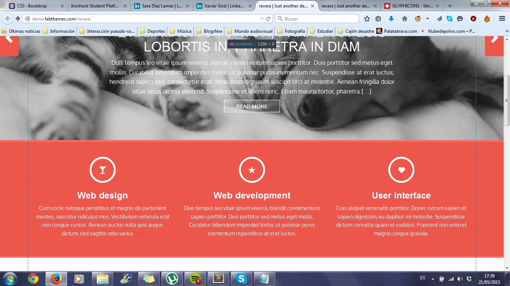

COSAS RANDOM
COSAS ALEATORIAS QUE ME APETECÍA PONER
Guebaaaaaaah dfkjsedlfk asdglñijkmwñirnf v reñdfijm wefoij
Los Black Keys. Y dí conmigo: RAAAAAN-DOM.

ñsrdgkf kjsedlfk asdglñijkmwñirnf v reñdfijm wefoij

Guebaaaaaaah dfkjlsdkfm wefoij